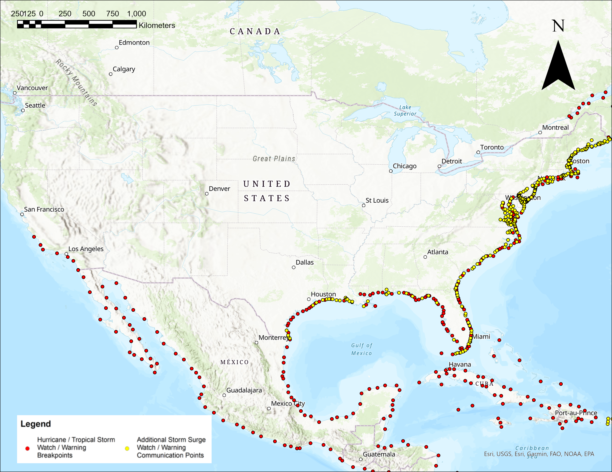

Mitchell Aitken, Julian Cramb, Jackson Cooper
Hurricanes are classified as violent wind storms that are rapidly rotating with a low-pressure center. Hurricanes are formed when warm, humid air from the surface of the ocean begins to rise, where then it encounters colder air that condenses the warm water vapor to form storm clouds and drops of rain. With the increasing prevalence of global warming, the extent, frequency, and power of these hurricanes and storms are ever-growing. Therefore, the need to understand these storms is also ever-growing. Their impact is going to become more apparent as time goes on, so we have to be able to foresee the possible complications that may arise.
For the purposes of the term project, we will be comparing different data sets to analyze the impact hurricanes’ have on many different parameters. Our approach to exploring this topic will primarily be treated as an interactive process, as this will allow our team to explore and discover different relationships within the data that we may not be aware of at this time as we begin this project. This iterative process will further allow us to adapt our work style, and allow us to adjust the time spent on various parameters as we discover efficiencies and faults in our assumed processes initially.
US cities with population over 10 000

Global hurricane tracks

Hurricane Warnings and Watches
| Name of dataset | Link |
|---|---|
| Global Hurricane Tracks | Link to dataset |
| Major U.S Cities | Link to dataset |
| Climate Data | Link to dataset |
| Breakpoints and Surge Warnings | Link to dataset |
| Shapefile of U.S | Link to dataset |